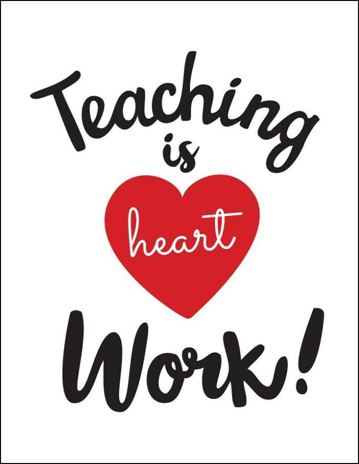

Get inspired by these messages put together for your maximum motivation. In life at times, we need to look somewhere where we can find source of information that can put us on the right part in life, or rather information that will make us to re-examine our life, because we can never know everything until we come across some information and learn from them. That is why all these twenty messages are packaged for you so that you can be motivated, inspired and be happy about the kind of life you’re living.
Here are the inspirational messages for you:
• I cried because I don’t have a shoe until I saw a man without a feet. Sometimes, we’re just too blind to appreciate the things which surround us.
• When life seems so tough, go on. When things go wrong, move on. Bear in mind that God gives you strength to persevere, not to surrender. Take care!
• Wake up! Exercise your faith. Do sit-up with prayer. Do push-up to release stress. Go! Jog to the Lord and send the good news!
• Don’t think too much of the problems in life, they are just test papers given by God to see how much we are learning in His subject called “Life”. If you think you failed, don’t worry because He is always ready to give remedial classes. So, review through prayers and have the perfect score of “Happiness”.
• Treat everyone with politeness, even those who are rude to you, not because they are not nice, but because you are nice
Teaching is heart work

• We are like pencils, the best part in us is inside, we make marks as we touch other’s lives. when we make mistakes, we can erase and we become better as we are sharpened.
• Prayer is a perfume to our soul and a fragrance that pleases God. Wear your prayer everyday and let it freshen you anytime, anywhere you go. Have a blessed and sweet-scented day!
• The more silently love is expressed, the more it is deeply bound to impress. No wonder God loves us in silence and gives us the miracles of having friends.
• Life is a continuous challenge, a constant struggle from womb to tomb. We are not made rich by what is in our pockets, but by what is in our hearts.
• Sometimes, we are in love in the idea of falling in love. Loving the illusion of having or missing someone. It’s alright to feel happy thru other people, but don’t get dependent on achieving happiness by being with someone. Love yourself first before sharing your life with somebody, because if you don’t, you will always look for people that you think can make you complete. And in the end, it will make you lose yourself more, bit by bit, piece by piece.
• Forget the things that made you sad and remember those that made you glad. Forget the troubles that passed away and remember the blessings that come each day.
• Have you ever experienced a time in your life when you felt so empty for no reason? Have you ever felt so down but you just can’t tell why? Have you ever felt like the world suddenly spins around you, and you are caught in the middle going nowhere? Weird, isn’t it? But that’s the beauty of being human… it is knowing that there is a purpose for each existence, and whatever that may be, it is also the reason why we still wake up breathing each morning, to discover that missing piece of puzzle that would make our lives complete.